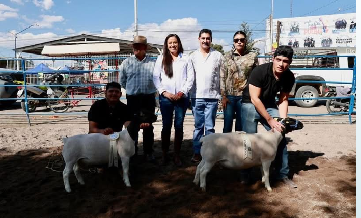

Feria Regional de la Revolución
Ver InformaciónProductores Participantes
Ejemplares en Exhibición
Visitantes
Orgullo Regional
La Expo Ganadera fue uno de los eventos más importantes de la Feria Regional de la Revolución 2025, donde productores locales mostraron con orgullo la calidad de su ganado.
Durante la inauguración se realizaron exhibiciones de ejemplares bovinos, ovinos y caprinos, así como espacios dedicados al sector agroindustrial e innovación del campo.
Conocer Más
La Expo Ganadera y Agroindustrial 2025 forma parte de las acciones estratégicas del Gobierno Municipal para fortalecer el desarrollo rural, impulsar la economía local y preservar nuestras tradiciones productivas.
Este evento se realiza en coordinación con productores, asociaciones ganaderas y autoridades municipales, reafirmando el compromiso con el crecimiento del sector agropecuario.

📍 Lugar: Instalaciones de la Feria Regional, Pabellón de Arteaga
📅 Fecha: Noviembre 2025
🕒 Horario: 10:00 a.m. – 10:00 p.m.